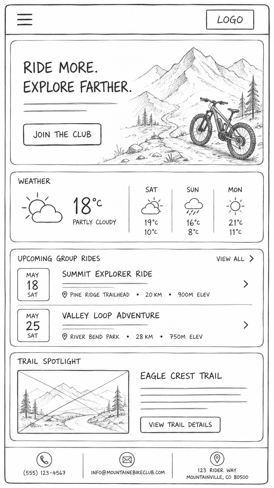
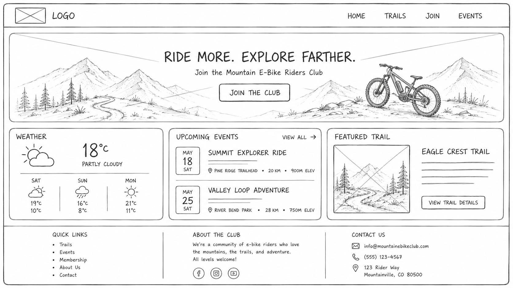

Site Name
Mountain E-Riders
This name directly communicates the core identity of the organization: mountain-focused electric bike enthusiasts. "Mountain" establishes the terrain specialty, "E-Riders" clearly identifies the e-bike community, and the combination is memorable, searchable, and brandable.
Optional domain: mountaineriders.org
Site Purpose
The Mountain E-Riders website serves as a centralized hub for e-bike trail riders in mountainous regions. It provides three core functions:
- Trail Discovery: A searchable directory of e-bike-compatible trails with difficulty ratings, distance, elevation gain, and real-time weather conditions via API integration.
- Community Building: Event listings for group rides, membership registration, and featured rider spotlights to foster connection among members.
- Resource Access: Practical information on e-bike maintenance, safety guidelines, and local regulations for mountain trail riding.
Scenarios
-
"I'm new to e-biking and want to find beginner-friendly mountain trails near me. How do I
know which trails are safe for my skill level?"
This scenario drives the Trails & Routes page design with filters for difficulty level and gear checklists per trail.
-
"I'm planning to join a group ride next weekend but need to confirm the meeting point and
time. Where can I get this info quickly?"
This scenario informs the Join/Events page with event cards showing clear date/time/location and RSVP functionality.
Color Scheme
All colors are validated against WCAG 2.1 AA standards (minimum 4.5:1 contrast ratio).
#2E7D32
Headings, nav links, active statesContrast vs white: 7.2:1 ✅
#E65100
CTAs, badges, hover effectsContrast vs white: 5.8:1 ✅
#1A1A1A
Page backgrounds, card bases
#FFFFFF
Body text on dark backgroundsContrast vs #1A1A1A: 16:1 ✅
Typography
Two-font system optimized for readability and brand alignment.
Space Grotesk — Headings & CTAs
Used for all headings (h1-h3), navigation links, buttons, and badges. Its geometric sans-serif structure conveys modernity and technical precision. Weights: 400 (regular), 700 (bold).
Inter — Body Text & Paragraphs
Primary font for all paragraph content, lists, form labels, and metadata. Designed specifically for screen readability. Weights: 400 (regular), 600 (semibold).
Wireframes
Low-fidelity layout representations showing content hierarchy and responsive behavior.

